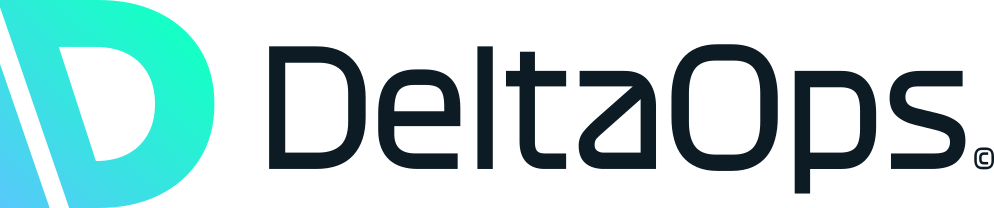

DeltaOps · Apps and automation for AEC
About DeltaOps
Operations and AI consultancy, London.
We map how work moves through a practice, then build apps and automations to improve it, using the tools already in place.
 Photo · Oliver
Photo · OliverOliver Ramirez
Founder & CEO
EMEA operations and cross-continental projects at Amazon, then Google AI. Anthropic certified.
 Photo · Arpan
Photo · ArpanArpan Bakshi
AEC apps and automation
Built the seven tools in this deck: data pipelines, 3D viewers and Claude-based workflows.
Case studies
Seven tools across the project lifecycle.

01 · Win work
Strategic Project Discovery
Live project search

01 · Win work
GrowthSignal
Bid-intelligence database

02 · Design
ModelChat
BIM model queries

03 · Design
Reference Buildings Explorer
Energy modelling

04 · Design
MaterialScan
Material compliance

05 · Deliver
WorkNodesCanvas
Document workbench

06 · Portfolio
Southwark Retrofit Atlas
Housing retrofit
How to read this
Each tile opens the project page: walkthrough, source code and, where possible, the running app.
DeltaOps · Apps and automation for AEC
01 · Win work · Bid intelligence
Finding work, two ways.
Opportunities are spread across hundreds of procurement portals, development bank registers and news sources. Teams often find them late.
DeltaOps · Apps and automation for AEC
02 · Design · BIM model queries
Questions to a BIM model in plain English.
Getting answers out of a BIM model usually needs a specialist and a desktop licence.
DeltaOps · Apps and automation for AEC
03 · Design · Energy modelling
Energy model results in 3D.
Energy model results sit in spreadsheets and HTML reports that are hard to compare.
DeltaOps · Apps and automation for AEC
04 · Design · Material compliance
Material compliance against three standards.
Certification evidence for each product sits in spreadsheets, PDFs and email.
DeltaOps · Apps and automation for AEC
05 · Deliver · Document workbench
From source documents to finished reports.
Turning surveys, workshop notes and data into client documents takes hours of copying and rewriting.
DeltaOps · Apps and automation for AEC
06 · Portfolio · Housing retrofit
Retrofit priorities for 149,062 homes.
Portfolio owners need to know which homes to retrofit first, what it costs, and what a fixed budget covers.